1. ภาพรวม: ข้อมูลไหลไปอย่างไร
Excel / CSV ของคุณ
admin.htmlตรวจ แก้ นำเข้า
เก็บในเบราว์เซอร์
data/กด "บันทึกขึ้น GitHub"
index.htmlอัปเดตเองใน 1–2 นาที
- ไฟล์ดิบของคุณคือต้นฉบับหลัก เว็บเป็นเพียงสำเนาที่แปลงแล้ว เก็บไฟล์ Excel ไว้ให้ดี เมื่อมีข้อมูลใหม่ให้เติมลงไฟล์เดิมแล้วนำเข้าทั้งไฟล์ ระบบเทียบให้ว่ามีค่าใหม่ ค่าที่เปลี่ยน และค่าที่เหมือนเดิมกี่ค่า ก่อนจะเขียนจริง
- ข้อมูลบนเว็บเก็บเป็นไฟล์ในโฟลเดอร์
data/ของรีโป:data/config.js(สถานี พิกัด ชุดข้อมูล ค่ามาตรฐาน RONI),data/daily/<รหัสสถานี>.js(ค่าฝุ่นรายวันของแต่ละสถานี),data/geo.js(ขอบเขตแผนที่) - ทุกอย่างที่แก้ในหลังบ้านยังไม่ขึ้นเว็บจนกว่าจะกด "บันทึกขึ้น GitHub" (หรืออัปโหลดไฟล์เอง) ระหว่างนั้นเป็นฉบับร่างในเบราว์เซอร์ของคุณเท่านั้น จะล้างทิ้งได้ด้วยปุ่ม "ล้างฉบับร่าง"
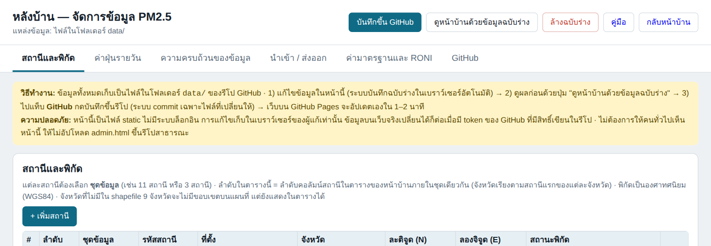
admin.html): ปุ่มด้านบนขวา และแท็บ สถานีและพิกัด / ค่าฝุ่นรายวัน / ความครบถ้วนของข้อมูล / นำเข้า-ส่งออก / ค่ามาตรฐานและ RONI / GitHub2. เตรียมตัวก่อนเริ่ม (ทำครั้งเดียว)
- อัปโหลดไฟล์ทั้งหมดขึ้นรีโป GitHub และเปิด GitHub Pages ตามไฟล์
README.md(หัวข้อ "เผยแพร่ด้วย GitHub Pages") - สร้าง token สำหรับให้หลังบ้านบันทึกไฟล์ขึ้นรีโป: GitHub → รูปโปรไฟล์ → Settings → Developer settings → Personal access tokens → Fine-grained tokens → Generate new token
- Repository access: Only select repositories แล้วเลือกรีโปนี้เท่านั้น
- Repository permissions → Contents: Read and write
- ตั้งวันหมดอายุ (เช่น 90 วัน) แล้วคัดลอก token (ขึ้นต้น
github_pat_) เก็บไว้ในที่ปลอดภัย
- เปิด
admin.html→ แท็บ GitHub → ใส่เจ้าของรีโป ชื่อรีโป branch (ปกติmain) และ token → กด ทดสอบการเชื่อมต่อ ต้องขึ้น "สิทธิ์ของ token: เขียนได้"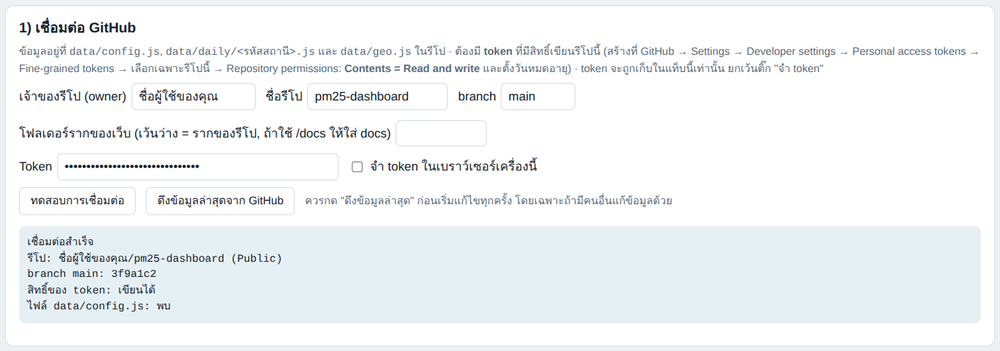
แท็บ GitHub หัวข้อ 1 (ตัวอย่างชื่อรีโปและ token เป็นค่าสมมติ)
ดูแล token เหมือนรหัสผ่าน อย่าส่งให้ผู้อื่นและอย่าอัปโหลดลงรีโป ระบบเก็บ token ไว้เฉพาะแท็บที่เปิดอยู่ (หายเมื่อปิดแท็บ) ยกเว้นติ๊ก "จำ token ในเบราว์เซอร์เครื่องนี้" ซึ่งไม่ควรติ๊กบนเครื่องที่คนอื่นใช้ร่วม ถ้าสงสัยว่า token รั่ว ให้ลบที่ GitHub แล้วสร้างใหม่ทันที
ไม่อยากใช้ token ก็ได้: ในแท็บ GitHub หัวข้อ 2 มีปุ่ม "ดาวน์โหลด" ของแต่ละไฟล์ที่เปลี่ยน แล้วนำไปอัปโหลดทับในรีโปเองที่ Add file → Upload files (รักษาโฟลเดอร์ data/ และ data/daily/ ไว้ตามเดิม)
3. รูปแบบไฟล์ดิบที่ระบบรู้จัก
หลังบ้านรับไฟล์ Excel (.xlsx) และ CSV ได้หลายไฟล์พร้อมกัน แล้วตรวจโครงสร้างของแต่ละชีตให้เอง ไม่ต้องบอกว่าเป็นไฟล์ชนิดไหน รูปแบบที่รู้จักมี 5 แบบ ซึ่งตรงกับไฟล์ที่ใช้ตอนเริ่มทำเว็บ
3.1 ตารางรายสถานี (ไฟล์ PM2_5_NorthernThailand_for_datatool)
- ชีตละ 1 สถานี ชื่อชีตต้องเป็น
PM2.5_ตามด้วยรหัสสถานี เช่นPM2.5_36t(ไม่สนตัวพิมพ์เล็ก/ใหญ่) - แถวที่ 1: ช่อง A เขียน
Dateแล้วใส่ปีไว้ที่คอลัมน์แรกของทุกบล็อก 12 คอลัมน์ (ช่องอื่นของบล็อกเว้นว่าง) - แถวที่ 2: เดือน 1 ถึง 12 วนซ้ำในแต่ละบล็อก
- แถวที่ 3–33: คอลัมน์ A เป็นวันที่ 1–31 ส่วนช่องที่เหลือคือค่า PM2.5 (µg/m³)
| Date | 2024 | 2025 | … | ||||
|---|---|---|---|---|---|---|---|
| 1 | 2 | 3 | 1 | 2 | 3 | … | |
| 1 | 26.8 | 14.7 | 47.5 | 28.4 | 25.1 | 19.6 | … |
| 2 | 19.2 | 17.5 | 51.1 | 26.5 | 20.1 | 16.5 | … |
| 3 | 18.3 | 22.7 | 42.1 | 23.8 | 25.6 | 24.6 | … |
ตัวอย่างจริงจากชีต PM2.5_36t (แสดงเฉพาะเดือน ม.ค.–มี.ค. ของปี 2024 และ 2025)
กติกาที่ต้องรักษา: (1) ป้ายปีต้องเรียงต่อเนื่องและไม่ซ้ำ ถ้าจะเพิ่มปีใหม่ ให้ต่อบล็อกใหม่ทางขวาและใส่ปีถัดไป (2) ช่องที่ไม่มีข้อมูลให้เว้นว่าง (ข้อความ n/a ก็ถือว่าไม่มีข้อมูล) ห้ามใส่ 0 แทนไม่มีข้อมูล เพราะ 0 จะถูกนับเป็นค่าจริง (3) ค่าที่ระบบรับ: 0–2000 เท่านั้น และวันที่ต้องมีอยู่จริง (เช่น ไม่มี 30 ก.พ.)
3.2 ตารางวันที่ × สถานี (ชีต PM2.5_Combined ของไฟล์ CM/LP/LI)
- แถวแรกเป็น
Dateแล้วตามด้วยรหัสสถานี (เช่นCM,LP,LI) แต่ละแถวต่อมาคือ 1 วัน ช่องที่ไม่มีค่าเว้นว่างได้ คอลัมน์ข้างเคียงที่ไม่ใช่รหัสสถานี (เช่น Summary) จะถูกข้าม
| Date | CM | LP | LI |
|---|---|---|---|
| 2026-03-05 | 71.0 | 79.7 | 66.1 |
| 2026-03-06 | 61.3 | 74.3 | 48.2 |
| 2026-03-09 | 52.6 | 59.9 | 35.0 |
| 2026-03-10 | 48.2 | 57.0 |
3.3 รายการ วันที่–ค่า
- ชีตละ 1 สถานี (ชื่อชีต = รหัสสถานี) คอลัมน์
Date,ID,PM2.5หรือรูปแบบdate, code, valueที่มีคอลัมน์รหัสสถานีในไฟล์เดียวกัน - ถ้าไฟล์เดียวกันมีทั้งชีตรวม (3.2) และชีตรายสถานี (3.3) ระบบจะไม่ติ๊กชีตรายสถานีให้ เพราะเป็นข้อมูลชุดเดียวกัน แนะนำใช้ชีตรวม
3.4 พิกัดสถานี (ไฟล์ 11Station / 3Station)
| Station Number | Location | Province | Latitude | Longtitude |
|---|---|---|---|---|
| 58t | ต. จองคำ อ. เมือง | แม่ฮ่องสอน | 19.284 | 97.967 |
| 73t | ต. เวียงพางคำ อ. แม่สาย | เชียงราย | 20.427 | 99.883 |
- ต้องมีคอลัมน์
LatitudeและLongtitude(สะกดตามไฟล์เดิมหรือLongitudeก็ได้) คอลัมน์แรกคือรหัสสถานี คอลัมน์LocationและProvinceไม่บังคับ — ไฟล์ 3 สถานีมีเพียงรหัส ละติจูด ลองจิจูด ระบบจะเติมจังหวัดและอำเภอจากพิกัดให้จากขอบเขต shapefile
3.5 ค่า RONI (ไฟล์ enso_config.csv)
| year | smoke_avg | smoke_type | smoke_category | non_smoke_avg | … | annual_avg | … |
|---|---|---|---|---|---|---|---|
| 2012 | −0.45 | Neutral | Neutral | 0.325 | … | −0.17 | … |
- 1 แถวต่อปี มีค่าเฉลี่ย 3 ช่วง: ฤดูหมอกควัน (
smoke_*) นอกฤดู (non_smoke_*) และทั้งปี (annual_*) ถ้าไม่ใส่ประเภท ระบบจัดประเภทให้จากค่า (> +0.5 = El Niño, < −0.5 = La Niña)
งานที่ 1 — เพิ่มข้อมูลฝุ่นรอบใหม่
กรณีทั่วไป: มีข้อมูลเดือน/ปีใหม่เพิ่มขึ้นมา และคุณเติมลงไฟล์ Excel รูปแบบเดิม (3.1) หรือมีไฟล์ใหม่รูปแบบ 3.2
- เติมข้อมูลลง Excel ตามกติกาใน 3.1 ถ้าเป็นปีใหม่ให้ต่อบล็อก 12 คอลัมน์ทางขวาและใส่ป้ายปีที่คอลัมน์แรกของบล็อก
- เปิด
admin.html→ แท็บ GitHub → กด ดึงข้อมูลล่าสุดจาก GitHub (กันกรณีมีคนอื่นแก้ไว้) - แท็บ นำเข้า / ส่งออก → ช่อง "นำเข้าข้อมูลจากไฟล์ดิบ" → เลือกไฟล์ Excel (เลือกหลายไฟล์พร้อมกันได้)
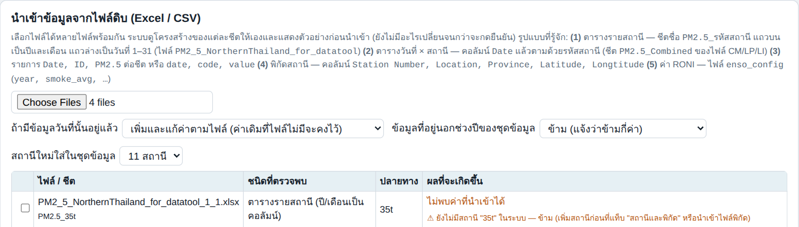
ช่องนำเข้าและตัวเลือก 3 ข้อ (ดูอธิบายด้านล่าง) - อ่านตารางตัวอย่าง ที่ขึ้นมา ยังไม่มีอะไรเปลี่ยนจนกว่าจะกดยืนยัน
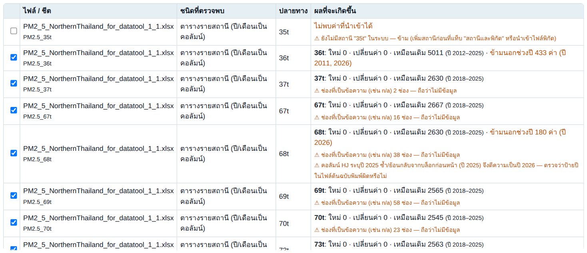
ตัวอย่างจากไฟล์ดิบจริง: ชีตที่ติ๊กไว้จะถูกนำเข้า (ตัวอย่างนี้นำเข้าซ้ำข้อมูลที่มีอยู่แล้ว จึงขึ้น "ใหม่ 0 · เปลี่ยนค่า 0 · เหมือนเดิม …") คำที่เห็น ความหมาย ใหม่ ค่าของวันที่ยังไม่มีในระบบ จะถูกเพิ่ม เปลี่ยนค่า วันที่มีค่าอยู่แล้วแต่ค่าในไฟล์ต่างออกไป (ต่างเกิน 0.005) จะถูกแก้ตามไฟล์ — ถ้าเลขนี้สูงทั้งที่ไม่ได้แก้ข้อมูลเก่า ให้ตรวจว่าเปิดผิดไฟล์ เหมือนเดิม ค่าตรงกับที่มีอยู่แล้ว ไม่มีการเปลี่ยน ข้ามนอกช่วงปี ค่าที่อยู่นอกช่วงปีของชุดข้อมูลนั้น (เช่น ชุด 11 สถานีตั้งไว้ 2012–2025) จะไม่ถูกนำเข้า เว้นแต่เลือก "ขยายช่วงปี" ลบค่าที่ไฟล์ไม่มี ขึ้นเฉพาะโหมด "แทนที่ทั้งปี" บอกจำนวนค่าเดิมที่จะถูกลบ ⚠ (สีส้ม) คำเตือน อ่านทุกข้อก่อนกดยืนยัน เช่น ป้ายปีซ้ำ วันที่ผิด สถานีที่ยังไม่มีในระบบ - เลือกตัวเลือก
ตัวเลือก เมื่อไรควรใช้ เพิ่มและแก้ค่าตามไฟล์ (ค่าเริ่มต้น) กรณีทั่วไป เพิ่มค่าใหม่และแก้ค่าที่ต่าง ส่วนค่าเดิมที่ไฟล์ไม่มีจะคงไว้ เติมเฉพาะวันที่ยังไม่มีค่า ต้องการเพิ่มโดยไม่แตะค่าเดิมเลย (ค่าที่ต่างจะถูกข้าม) แทนที่ทั้งปีของสถานีที่อยู่ในไฟล์ ไฟล์คือต้นฉบับที่ถูกต้องทั้งปี และต้องการให้ค่าที่ไฟล์ไม่มีถูกลบด้วย ระวัง: ลบข้อมูล รายปี: "ช่วงของปี" (ทั้งปี / ช่วงหมอกควัน / นอกช่วงหมอกควัน) ตัวเลือกอยู่ในหน้าความเข้มข้น วันที่เกินมาตรฐาน และแผนที่ (เมื่อเลือกโหมดรายปี) ค่าแต่ละปีจะคำนวณเฉพาะเดือนในช่วงที่เลือก ไม่เกี่ยวกับการนำเข้าข้อมูล ปีนอกช่วง: ขยายช่วงปีให้ครอบคลุม เมื่อนำเข้าปีใหม่ เช่น ข้อมูลปี 2026 เข้าชุด 11 สถานี (ที่ตั้งไว้ถึง 2025) ต้องเลือกข้อนี้ ไม่งั้นจะถูกข้าม - กด ยืนยันนำเข้าตามที่ติ๊ก ระบบสรุปจำนวนที่เพิ่ม/เปลี่ยน/ข้าม
- ตรวจผล: แท็บ "ความครบถ้วนของข้อมูล" ดูจำนวนวันต่อสถานีต่อปี (เขียว ≥ 90% · เหลือง 75–89% · ส้ม < 75%) และปุ่ม ดูหน้าบ้านด้วยข้อมูลฉบับร่าง เพื่อดูหน้าเว็บจริงก่อนเผยแพร่
- ถ้าเป็นปีใหม่ อย่าลืมใส่ค่า RONI ของปีนั้น (งานที่ 6) และตั้งช่วงปี (งานที่ 7) ให้ครอบคลุม
- บันทึกขึ้นเว็บ: งานที่ 8
ใช้ไฟล์ทั้งชุดซ้ำได้เลย นำเข้าไฟล์ Excel ฉบับเต็ม (ข้อมูลเก่าและใหม่รวมกัน) ทุกครั้งก็ได้ ค่าเดิมจะขึ้น "เหมือนเดิม" และมีเฉพาะค่าใหม่ที่เพิ่ม จึงไม่ต้องตัดไฟล์เป็นส่วนๆ
ค่าที่นำเข้าถูกเก็บทศนิยม 2 ตำแหน่ง (เช่น 21.125 เก็บเป็น 21.13) ซึ่งไม่กระทบการนับวันเกินมาตรฐานในทางปฏิบัติ
งานที่ 2 — แก้ค่าที่ผิด
แก้ไม่กี่ค่า (แก้ในหลังบ้านโดยตรง)
- แท็บ ค่าฝุ่นรายวัน → เลือกสถานีและปี ตารางจะแสดง 12 เดือน × 31 วัน
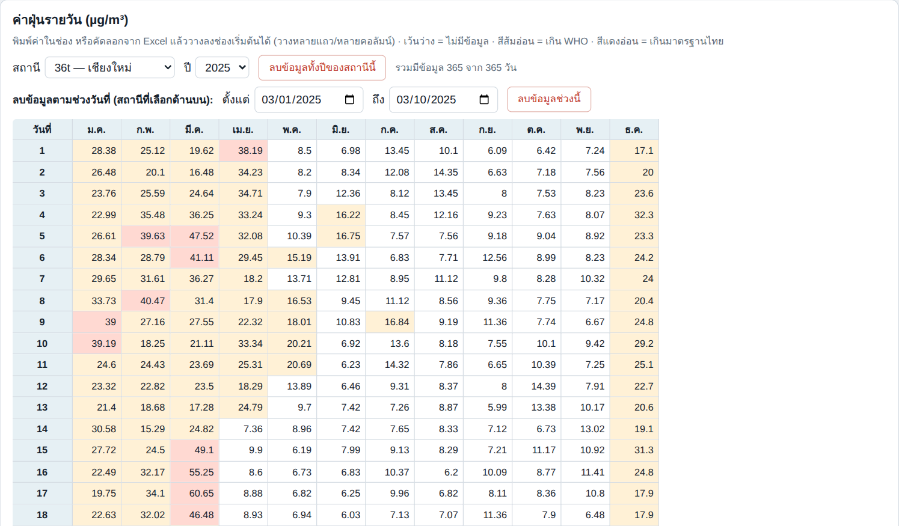
ตารางแก้ค่ารายวัน: สีส้มอ่อน = เกิน WHO, สีแดงอ่อน = เกินมาตรฐานไทย, แถวล่างสรุปจำนวนวันและค่าเฉลี่ยรายเดือน และมีเครื่องมือลบตามช่วงวันที่ - คลิกช่องแล้วพิมพ์ค่าใหม่ (ช่องที่ค่าไม่ถูกต้องเช่น ติดลบหรือเกิน 2000 จะเป็นสีแดงและไม่ถูกบันทึก) ลบค่า = ทำช่องให้ว่าง
- คัดลอกจาก Excel มาวางได้: คลิกช่องเริ่มต้นแล้วกด Ctrl+V ระบบวางต่อเนื่องหลายแถว/หลายคอลัมน์ให้ (ช่องที่วันที่ไม่มีจริง เช่น 31 ก.พ. จะถูกข้าม)
แก้จำนวนมาก (แก้ใน Excel แล้วนำเข้า)
- แก้ค่าในไฟล์ Excel ต้นฉบับ → นำเข้าตามงานที่ 1 โหมด "เพิ่มและแก้ค่าตามไฟล์" ตารางตัวอย่างจะบอกจำนวน เปลี่ยนค่า ให้เทียบกับที่คุณตั้งใจแก้
- ถ้าต้องการลบค่าบางค่าด้วย ให้ลบในไฟล์ (เว้นว่าง) แล้วใช้โหมด "แทนที่ทั้งปี" (ดูรายการ "ลบค่าที่ไฟล์ไม่มี" ในตัวอย่าง)
งานที่ 3 — เอาข้อมูลออก
| ต้องการ | ทำที่ไหน | หมายเหตุ |
|---|---|---|
| ลบเป็นช่วงวันที่ | แท็บ ค่าฝุ่นรายวัน → "ลบข้อมูลตามช่วงวันที่" (สถานีที่เลือกอยู่) → เลือกวันเริ่ม-สิ้นสุด → "ลบข้อมูลช่วงนี้" | ระบบบอกจำนวนค่าที่จะลบและถามยืนยันก่อน |
| ลบทั้งปีของสถานีเดียว | แท็บ ค่าฝุ่นรายวัน → "ลบข้อมูลทั้งปีของสถานีนี้" | |
| ลบเป็นรายช่อง | แท็บ ค่าฝุ่นรายวัน → ทำช่องให้ว่าง | |
| ลบทั้งสถานี (รวมข้อมูลรายวันทั้งหมด) | แท็บ สถานีและพิกัด → ปุ่ม "ลบ" ท้ายแถว | ไฟล์ data/daily/<รหัส>.js ของสถานีนั้นจะถูกลบออกจากรีโปตอน commit |
| ลบข้อมูลที่ไม่ต้องการหลายสถานีพร้อมกัน | แก้ใน Excel แล้วนำเข้าโหมด "แทนที่ทั้งปี" | ตรวจรายการ "ลบค่าที่ไฟล์ไม่มี" ในตัวอย่างก่อนกดยืนยัน |
ก่อนลบจำนวนมาก ให้กดส่งออกสำรองก่อน: แท็บ นำเข้า / ส่งออก → "ค่ารายวันทั้งหมดเป็น Excel รูปแบบเดิม (ชีตละสถานี)" ไฟล์ที่ได้นำกลับมานำเข้าได้ทันที และ GitHub เก็บประวัติทุกครั้งที่ commit (ดู งานที่ 9)
งานที่ 4 — เพิ่มสถานีใหม่
- วิธีที่ 1: นำเข้าไฟล์พิกัด — แท็บ นำเข้า / ส่งออก → เลือกไฟล์พิกัดรูปแบบ 3.4 → ในตัวอย่างจะเห็น "เพิ่มสถานีใหม่ N" → เลือก "สถานีใหม่ใส่ในชุดข้อมูล" ให้ตรงชุดที่ต้องการ → ยืนยันนำเข้า
- วิธีที่ 2: กรอกเอง — แท็บ สถานีและพิกัด → "+ เพิ่มสถานี" แล้วกรอก: ชุดข้อมูล, รหัสสถานี (ใช้ได้เฉพาะ A–Z a–z 0–9 _ - เพราะใช้ตั้งชื่อไฟล์), ที่ตั้ง, ละติจูด/ลองจิจูด (องศาทศนิยม) — ถ้าเว้นจังหวัดไว้ ระบบเติมจังหวัดให้อัตโนมัติเมื่อกรอกพิกัดครบ
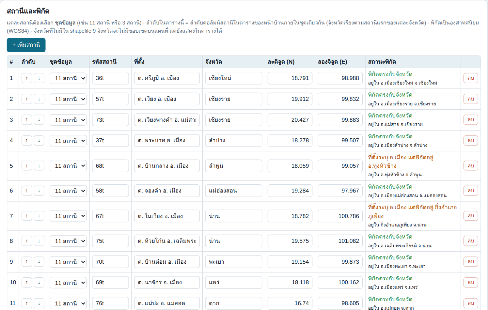
แท็บสถานีและพิกัด ช่อง "สถานะพิกัด" ตรวจพิกัดเทียบกับขอบเขต shapefile ทุกสถานี - ดูช่อง "สถานะพิกัด" ของสถานีใหม่
ข้อความ ความหมาย / ต้องทำอะไร (เขียว) พิกัดตรงกับจังหวัด + อยู่ใน อ.xxx ปกติ (ส้ม) ที่ตั้งระบุ อ.A แต่พิกัดอยู่ อ.B ชื่ออำเภอในช่อง "ที่ตั้ง" ไม่ตรงกับอำเภอที่พิกัดตกอยู่ ตรวจพิกัดหรือชื่อ — ถ้าสถานีอยู่ติดเขตแดนอำเภออาจไม่ใช่ข้อผิดพลาด (แดง) จังหวัดไม่ตรงกับพิกัด จังหวัดที่กรอกไม่ตรงกับจังหวัดที่พิกัดตกอยู่ แก้จังหวัดหรือพิกัด อยู่นอกกรอบแผนที่ / พิกัดไม่อยู่ในจังหวัดใดของ shapefile สถานีจะไม่แสดงบนแผนที่ (ยังแสดงในตารางได้) ถ้าเป็นจังหวัดใหม่ต้องเพิ่มขอบเขต ดู งานที่ 10 พิกัดผิดปกติ (สลับ lat/lon?) ละติจูดต้องอยู่ราว 5–25 และลองจิจูดราว 90–110 สำหรับประเทศไทย - นำเข้าค่าฝุ่นของสถานีใหม่ — เตรียมชีต
PM2.5_<รหัสสถานี>ตามรูปแบบ 3.1 (หรือคอลัมน์รหัสสถานีในตารางรวมแบบ 3.2) แล้วนำเข้าตามงานที่ 1 ต้องเพิ่มสถานีก่อนเสมอ ไม่เช่นนั้นระบบจะขึ้น "ยังไม่มีสถานี … ในระบบ — ข้าม" - ถ้าเป็นจังหวัดที่ยังไม่เคยมีสถานี จังหวัดนั้นจะเกิดคอลัมน์ใหม่ในทุกตารางโดยอัตโนมัติ (เรียงจังหวัดตามสถานีแรกของจังหวัดนั้นในรายการ) และมีสีประจำจังหวัดให้
งานที่ 5 — แก้พิกัด ชื่อ ลำดับ หรือลบสถานี
- แก้พิกัด / ที่ตั้ง / จังหวัด: แก้ในช่องของแถวสถานีนั้นได้เลย (ผลบนแผนที่เปลี่ยนทันทีในฉบับร่าง) ดูช่อง "สถานะพิกัด" ว่าถูกต้อง
- เปลี่ยนลำดับ: ปุ่ม ↑ ↓ ลำดับในแท็บนี้คือลำดับคอลัมน์สถานีในตารางหน้าเว็บ (จังหวัดเรียงตามสถานีแรกของแต่ละจังหวัด) — ปัจจุบันตั้งเป็น 36t, 57t, 73t, 37t, 68t, 58t, 67t, 75t, 70t, 69t, 76t
- เปลี่ยนรหัสสถานี: แก้ในช่องรหัส ระบบย้ายข้อมูลรายวันตามให้ (ไฟล์
data/daily/<รหัสเก่า>.jsจะถูกลบและสร้างไฟล์รหัสใหม่ตอน commit) แต่ชื่อชีตใน Excel ต้องเปลี่ยนตามเมื่อนำเข้าครั้งต่อไป - ย้ายสถานีไปอีกชุดข้อมูล: เปลี่ยนช่อง "ชุดข้อมูล" ของแถวนั้น
- ลบสถานี: ปุ่ม "ลบ" (ลบข้อมูลรายวันของสถานีนั้นด้วย)
แก้พิกัดแล้วตรวจสอบเสมอว่า "สถานะพิกัด" เป็นสีเขียว โดยเฉพาะสถานีที่ขึ้นสีส้ม/แดง (ดู หัวข้อสิ่งที่พบในไฟล์ดิบ)
งานที่ 6 — ค่า RONI / ENSO
ค่า RONI ใช้ในแถบสีของกราฟ และตัวเลือก baseline ตามประเภท ENSO (El Niño / La Niña / Neutral) ในหน้าเว็บ
- เพิ่มปีใหม่ทีละค่า: แท็บ ค่ามาตรฐานและ RONI → ตาราง RONI → ใส่ค่าในช่องของปีนั้น (ฤดูหมอกควัน / นอกฤดู / ทั้งปี) ระบบจัดประเภทและความแรงให้อัตโนมัติ (> +0.5 = El Niño, < −0.5 = La Niña; ความแรงจากค่าที่ปัด 1 ตำแหน่ง: < 1.0 Weak, < 1.5 Moderate, < 2.0 Strong, ≥ 2.0 Very Strong)
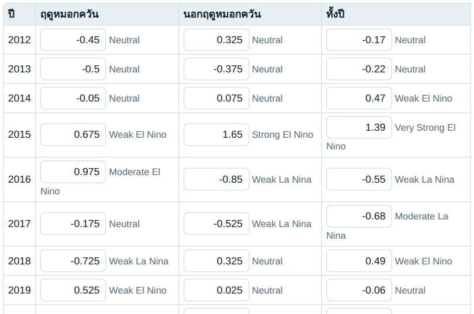
ตารางค่า RONI รายปี แถวของปีจะมีให้ตามช่วงปีของชุดข้อมูล - หรือนำเข้าทั้งไฟล์
enso_config.csvตามรูปแบบ 3.5 (นำเข้า / ส่งออก) ปีที่ซ้ำจะถูกเขียนทับ - ส่งออกกลับเป็น CSV รูปแบบเดิมได้ที่แท็บ นำเข้า / ส่งออก → "ค่า RONI (CSV รูปแบบเดิม)"
แถวของตารางมีเฉพาะปีในช่วงปีของชุดข้อมูล ถ้าต้องการเพิ่มปี ให้ขยายช่วงปีก่อน (งานที่ 7)
งานที่ 7 — ชุดข้อมูล ช่วงปี เกณฑ์ และมาตรฐาน
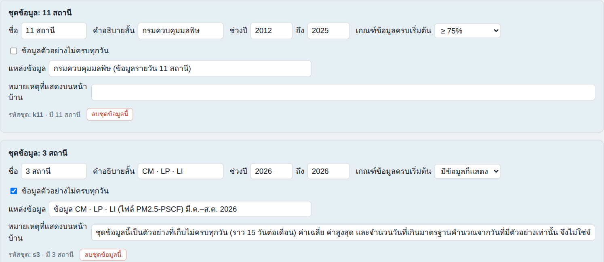

กลุ่มจังหวัดคำนวณอย่างไร: ค่าของกลุ่ม = ค่าเฉลี่ยของ "ค่ารายจังหวัด" ในกลุ่มของวันเดียวกัน (แต่ละจังหวัดน้ำหนักเท่ากัน) แล้วจึงสรุปเป็นเดือน/ปี · ค่ารายเดือน/รายปีของกลุ่มจะแสดงเมื่ออย่างน้อย 80% ของจังหวัดในกลุ่มมีข้อมูลผ่านเกณฑ์ ปีแรกๆ ที่มีสถานีไม่ครบจึงขึ้น "—" (เช่น 2012–2018) · กลุ่มจะแสดงเฉพาะในชุดข้อมูลที่มีครบทุกจังหวัดของกลุ่ม (ชุด 3 สถานีจึงไม่แสดง)
| ต้องการ | แก้ตรงไหน (แท็บ ค่ามาตรฐานและ RONI) |
|---|---|
| ขยาย/ลดช่วงปีของชุดข้อมูล (เช่น เพิ่มปี 2026) | การ์ดของชุดนั้น → ช่อง "ช่วงปี … ถึง …" (การลดช่วงปีไม่ลบข้อมูล แต่หน้าเว็บจะไม่แสดงปีนอกช่วง) |
| เปลี่ยนเกณฑ์ข้อมูลครบเริ่มต้น | การ์ดของชุดนั้น → "เกณฑ์ข้อมูลครบเริ่มต้น" (ผู้ชมเปลี่ยนเองได้ที่มุมขวาบนของหน้าเว็บ) ชุด 11 สถานี = ≥ 75% ชุด 3 สถานี = "มีข้อมูลก็แสดง" |
| ข้อมูลที่เก็บไม่ครบทุกวัน | ติ๊ก "ข้อมูลตัวอย่างไม่ครบทุกวัน" และเขียนคำอธิบายในช่อง "หมายเหตุที่แสดงบนหน้าบ้าน" (หน้าเว็บจะแสดงแถบหมายเหตุ) |
| ชื่อ แหล่งข้อมูล คำอธิบายที่แสดงบนปุ่มสลับชุด | การ์ดของชุดนั้น |
| กลุ่ม 8 จังหวัด / 9 จังหวัด (คอลัมน์ "ภาพรวม" ในตาราง) | การ์ด "กลุ่มจังหวัด" → ติ๊กจังหวัดที่อยู่ในแต่ละกลุ่ม แก้ชื่อและสี เพิ่ม/ลบกลุ่มได้ ค่าเริ่มต้น: 8 จังหวัด = 9 จังหวัดไม่รวมตาก, 9 จังหวัด = ทั้งหมด (ถ้านิยาม 8 จังหวัดของคุณต่างจากนี้ ให้ติ๊กใหม่ได้เลย) · "วิธีคำนวณค่ากลุ่ม" เลือกได้ระหว่างเฉลี่ยของจังหวัด (ทุกจังหวัดน้ำหนักเท่ากัน — ค่าเริ่มต้น) กับเฉลี่ยของสถานีทั้งหมดในกลุ่ม |
| ช่วงหมอกควัน (smoke haze) และนอกช่วง | การ์ด "ช่วงหมอกควัน" → ติ๊กเดือนที่นับเป็นช่วงหมอกควัน (ค่าเริ่มต้น ก.พ.–พ.ค.) เดือนที่เหลือ (ม.ค., มิ.ย.–ธ.ค.) นับเป็นนอกช่วง |
| เพิ่มชุดข้อมูลใหม่ (เช่น กลุ่มสถานีอีกกลุ่ม) | ปุ่ม "+ เพิ่มชุดข้อมูลใหม่" → ตั้งรหัสและชื่อปุ่ม → ตั้งช่วงปี → ไปแท็บสถานีเพื่อย้ายหรือเพิ่มสถานีเข้าชุดนั้น ชุดที่มีปีเดียวจะแสดงเฉพาะหน้า แผนที่ / ความเข้มข้น / วันที่เกินมาตรฐาน |
| ลบชุดข้อมูล | ปุ่ม "ลบชุดข้อมูลนี้" (ต้องย้ายหรือลบสถานีออกจากชุดก่อน) |
| เปลี่ยนค่ามาตรฐาน (ไทย 37.5, WHO 15.0) | การ์ด "ค่ามาตรฐานและข้อมูลทั่วไป" (เกินเมื่อค่า มากกว่าเกณฑ์) |
งานที่ 8 — บันทึกขึ้นเว็บ (GitHub)
- กดปุ่ม บันทึกขึ้น GitHub ที่มุมขวาบน (หรือเปิดแท็บ GitHub) หัวข้อ 2 แสดงรายการไฟล์ที่ต่างจากรีโป (แก้ไข / เพิ่มไฟล์ใหม่ / ลบไฟล์) ตรวจว่าตรงกับที่คุณทำ
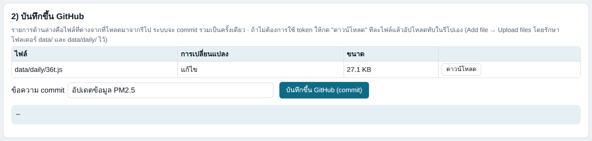
ตัวอย่าง: แก้ค่าฝุ่นของ 36t และชื่อที่ตั้ง ระบบจะ commit เฉพาะ config.jsกับdaily/36t.js - ถ้ามีข้อความสีแดง "ต้องแก้ก่อนบันทึก" (เช่น รหัสสถานีซ้ำ ยังไม่ระบุจังหวัด) ให้แก้ก่อน
- ใส่ข้อความ commit (บอกว่าแก้อะไร เช่น "เพิ่มข้อมูลปี 2026 ทุกสถานี") แล้วกด บันทึกขึ้น GitHub (commit) → ตรวจรายการในกล่องยืนยัน → ตกลง
- ขึ้นข้อความ "สำเร็จ ✓" พร้อมลิงก์ commit รอประมาณ 1–2 นาที GitHub Pages จะอัปเดตเว็บ
- ตรวจเว็บจริง: เปิดเว็บแล้วกด Ctrl+F5 (กันแคช) ดูว่าตัวเลขตรงกับที่ตั้งใจ ลองสลับปุ่ม 11 สถานี / 3 สถานี
ก่อนแก้ข้อมูลทุกครั้ง กด "ดึงข้อมูลล่าสุดจาก GitHub" ถ้ามีหลายคนแก้ไฟล์พร้อมกัน คนที่ commit ทีหลังจะทับไฟล์ที่ตัวเองแก้ (ไฟล์ที่ไม่ได้แก้ไม่ถูกแตะ)
ถ้าขึ้น 401 = token ผิดหรือหมดอายุ · 403 = ไม่มีสิทธิ์/เกินโควตา · 404 = ชื่อรีโปหรือ branch ผิด หรือ token ไม่ได้รับสิทธิ์รีโปนี้ (หรือรีโปยังไม่มี commit แรก) — ดูตารางปัญหาที่พบบ่อยท้ายคู่มือ
งานที่ 9 — ย้อนกลับเมื่อพลาด
- ยังไม่ได้ commit: กด "ล้างฉบับร่าง" ที่มุมขวาบน ระบบทิ้งการแก้ที่ค้างอยู่ทั้งหมดและกลับไปใช้ข้อมูลในโฟลเดอร์
data/ปัจจุบัน หรือกด "ดึงข้อมูลล่าสุดจาก GitHub" - commit ไปแล้ว: GitHub เก็บทุกเวอร์ชันของทุกไฟล์ ไม่มีข้อมูลหายถาวร
- เปิดรีโปบน GitHub → เปิดไฟล์ที่พลาด (เช่น
data/daily/68t.js) → ปุ่ม History - เลือก commit ก่อนหน้าที่ถูกต้อง → เปิดไฟล์ในเวอร์ชันนั้น → ปุ่ม Raw แล้วบันทึกไฟล์ (หรือ Download)
- อัปโหลดทับไฟล์เดิมในรีโป (Add file → Upload files) แล้ว commit
- เปิดรีโปบน GitHub → เปิดไฟล์ที่พลาด (เช่น
- เมื่อไม่แน่ใจว่าอะไรเปลี่ยนไป: หน้า commit ของ GitHub แสดงไฟล์ที่เปลี่ยนในแต่ละครั้งพร้อมข้อความที่คุณเขียนไว้ จึงควรเขียนข้อความ commit ให้สื่อความหมาย
งานที่ 10 — เปลี่ยนขอบเขตแผนที่
ขอบเขตอำเภอ จังหวัด ประเทศ อยู่ใน data/geo.js ซึ่งสร้างจาก shapefile ด้วยสคริปต์ tools/build_geo.py (หลังบ้านแก้ขอบเขตโดยตรงไม่ได้)
- ติดตั้ง Python และไลบรารี (ครั้งเดียว):
pip install pyshp shapely pyproj - วาง shapefile ไว้ในโฟลเดอร์
source/(ไฟล์.shp .dbf .prjครบ) แล้วรันที่โฟลเดอร์รากของรีโปpython tools/build_geo.py \ --prov source/9UNT_subprovince_1.shp \ --world source/world-administrative-boundaries_1.shp \ --config data/config.js \ --out data/geo.js
- เพิ่มไฟล์
data/geo.jsใหม่ขึ้นรีโป: อัปโหลดทับเอง หรือแท็บ GitHub หัวข้อ 3 "ขอบเขตแผนที่" → เลือกไฟล์ → กลับไปกด commit ในหัวข้อ 2 - ชื่อจังหวัดใน shapefile ต้องตรงกับชื่อจังหวัดที่ใส่ในสถานี มิฉะนั้นจะไม่มีสีและชื่อจังหวัดของคอลัมน์นั้น หลังเพิ่มขอบเขตแล้ว ช่อง "สถานะพิกัด" ในหลังบ้านจะใช้ขอบเขตใหม่ตรวจพิกัดให้ด้วย
รายละเอียดตัวเลือกของสคริปต์ (ระบบพิกัด ชื่อฟิลด์ กรอบแผนที่) อยู่ที่หัวไฟล์ tools/build_geo.py และ README.md
เช็กลิสต์ทุกครั้งที่อัปเดต
- ☐ ดึงข้อมูลล่าสุดจาก GitHub
- ☐ (งานใหญ่) ส่งออก Excel สำรองก่อน
- ☐ นำเข้าไฟล์ดิบ และอ่านคำเตือน ⚠ ทุกข้อ ในตารางตัวอย่าง
- ☐ ตัวเลข ใหม่ / เปลี่ยนค่า / ข้ามนอกช่วงปี ตรงกับที่คาดไว้
- ☐ ปีใหม่: ขยายช่วงปี + ใส่ค่า RONI
- ☐ แท็บ "ความครบถ้วนของข้อมูล": จำนวนวันต่อปีสมเหตุสมผล
- ☐ แท็บ "สถานีและพิกัด": สถานะพิกัดทุกสถานีเป็นสีเขียว (หรืออธิบายได้)
- ☐ ดูหน้าบ้านด้วยข้อมูลฉบับร่าง: ลองหน้าแผนที่ ตาราง กราฟ และสลับชุดข้อมูล
- ☐ แท็บ GitHub: ตรวจรายการไฟล์ที่เปลี่ยน → เขียนข้อความ commit → commit
- ☐ รอ 1–2 นาที เปิดเว็บจริงกด Ctrl+F5 ตรวจซ้ำ
- ☐ เก็บไฟล์ดิบฉบับล่าสุดไว้ (ไฟล์ Excel ที่นำเข้า หรือส่งออกใหม่จากหลังบ้าน)
สิ่งที่พบในไฟล์ดิบชุดเดิมและวิธีที่ระบบจัดการ
ตอนนำเข้าไฟล์ดิบชุดที่ใช้ทำเว็บ ระบบตรวจพบเรื่องต่อไปนี้ (ตัวอย่างที่ควรรู้ เพราะอาจเกิดซ้ำในไฟล์รอบหน้า)
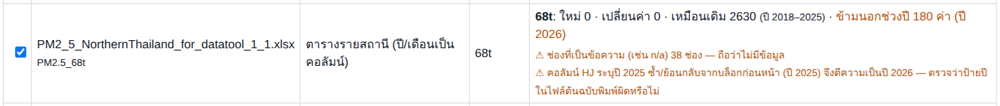
PM2.5_68t: ป้ายปีซ้ำ| ที่พบ | ระบบทำอะไร | ควรทำอะไรกับไฟล์ต้นฉบับ |
|---|---|---|
| ชีต 68t: ป้ายปี "2025" พิมพ์ซ้ำ ที่คอลัมน์ HJ (บล็อกที่สองควรเป็นปี 2026) ทำให้ข้อมูลสองปีปนกัน | ตีความบล็อกที่ซ้ำเป็นปีถัดไป (2026) และขึ้นคำเตือนสีส้ม ค่าชุดเริ่มต้นในรีโปสร้างด้วยการตีความนี้ (68t ปี 2025 = บล็อกแรก) | แก้ป้ายปีที่คอลัมน์ HJ เป็น 2026 ในไฟล์ Excel (ตรวจยืนยันแล้วว่าบล็อกนั้นสัมพันธ์กับข้อมูล 36t ปี 2026 มากกว่าปี 2025) |
มีชีต PM2.5_35t แต่ไม่มีสถานี 35t ในระบบ | ข้ามชีต พร้อมคำเตือน | ถ้าต้องการใช้ ให้เพิ่มสถานี 35t ก่อน (งานที่ 4) |
| ชีต 36t มีข้อมูลปี 2011 และ 2026 (433 ค่า) | ข้ามเพราะอยู่นอกช่วง 2012–2025 ที่ตั้งไว้ แจ้งจำนวนที่ข้าม | ต้องการใช้: เลือก "ขยายช่วงปี" (งานที่ 1) |
ช่องที่เป็นข้อความ n/a / N/A | ถือว่าไม่มีข้อมูล | ไม่ต้องทำอะไร (หรือเว้นว่างไว้) |
ไฟล์ CM/LP/LI: ชีต CM แถวที่ 3 วันที่ 2026-01-06 ย้อนกลับจากแถวก่อนหน้า (น่าจะเป็น 2026-03-06) | ขึ้นคำเตือนวันที่ย้อนกลับ และไม่ติ๊กชีตรายสถานีให้ เพราะมีชีตรวม PM2.5_Combined ที่แก้วันที่แล้ว | ใช้ชีต PM2.5_Combined นำเข้า หรือแก้วันที่ในชีต CM |
| ชุด CM/LP/LI เก็บตัวอย่างไม่ครบทุกวัน (CM 92, LP 92, LI 87 วัน จาก 184 วัน มี.ค.–ส.ค. 2026) | ตั้งชุดนี้เป็น "ข้อมูลตัวอย่างไม่ครบทุกวัน" เกณฑ์ข้อมูลครบ = มีข้อมูลก็แสดง และมีแถบหมายเหตุบนหน้าเว็บ | เวลาอ้างผล ให้ระบุว่าจำนวนวันเกินมาตรฐานนับเฉพาะวันที่มีตัวอย่าง |
| พิกัด 68t (18.059, 99.057) ตกใน อ.ทุ่งหัวช้าง แต่ที่ตั้งเขียน "ต.บ้านกลาง อ.เมือง" | ขึ้นคำเตือนสีส้มในช่อง "สถานะพิกัด" | ตรวจพิกัดจริงของสถานี (ถ้าอยู่ในตัวเมืองลำพูนจริง พิกัดควรอยู่ใกล้พิกัด LP ในไฟล์ของคุณ คือ 18.589, 99.039) แล้วแก้ในแท็บสถานีและพิกัด |
| พิกัด 67t ตกในเขตกิ่งอำเภอภูเพียง แต่ที่ตั้งเขียน "อ.เมือง" (จังหวัดน่าน) | ขึ้นคำเตือนสีส้ม | สถานีอยู่ใกล้เขตแดนอำเภอ มักไม่ใช่ข้อผิดพลาด ตรวจเทียบแผนที่ถ้าต้องการความแน่ใจ |
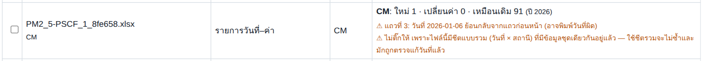
CM (ไฟล์ PSCF): วันที่ย้อนกลับปัญหาที่พบบ่อย
| อาการ | สาเหตุที่เป็นไปได้ | วิธีแก้ |
|---|---|---|
| นำเข้าแล้วขึ้น "ยังไม่มีสถานี X ในระบบ — ข้าม" | ชื่อชีตไม่ตรงรหัสสถานี หรือยังไม่ได้เพิ่มสถานี | เพิ่มสถานีก่อน (งานที่ 4) และตั้งชื่อชีตเป็น PM2.5_รหัส |
| "ไม่รู้จักโครงสร้างของชีตนี้ — ข้าม" | หัวตารางไม่ตรงกับ 5 รูปแบบ (เช่น ไม่มีคอลัมน์ Date) | เทียบกับหัวข้อ 3 แล้วแก้หัวตาราง |
| ข้อมูลที่เพิ่งนำเข้าไม่โผล่ในหน้าเว็บ | ปีอยู่นอกช่วงปีของชุด (ถูกข้าม) หรือยังไม่ได้ commit หรือเบราว์เซอร์แคช | ดูตัวอย่างว่ามี "ข้ามนอกช่วงปี" ไหม → เลือกขยายช่วงปี · ตรวจว่า commit แล้ว · Ctrl+F5 |
| หน้าเว็บแสดง "—" ในเดือน/ปีที่มีข้อมูล | จำนวนวันที่มีข้อมูลน้อยกว่าเกณฑ์ข้อมูลครบ (มุมขวาบน) | ดูแท็บ "ความครบถ้วนของข้อมูล" หรือเปลี่ยนเกณฑ์เป็น "มีข้อมูลก็แสดง" เพื่อดู |
| จำนวน "เปลี่ยนค่า" สูงมากทั้งที่ไม่ได้แก้ข้อมูลเก่า | เปิดไฟล์ผิด หรือไฟล์เลื่อนบล็อกปี/สลับสถานี | อย่ากดยืนยัน ตรวจไฟล์ก่อน |
| กดบันทึกขึ้น GitHub แล้ว 401 | token ผิด หมดอายุ หรือถูกลบ | สร้าง token ใหม่ (หัวข้อ 2) |
| 403 | token ไม่มีสิทธิ์ Contents: Read and write หรือเกินโควตาการเรียก | ตรวจสิทธิ์ของ token / รอสักครู่ |
| 404 | พิมพ์ชื่อรีโปหรือ branch ผิด · token ไม่ได้เลือกรีโปนี้ · รีโปยังว่างเปล่า | กด "ทดสอบการเชื่อมต่อ" ดูข้อความละเอียด · อัปโหลดไฟล์ขึ้นรีโปให้มี commit แรกก่อน |
| commit สำเร็จแต่เว็บยังเป็นข้อมูลเดิม | GitHub Pages ยังไม่อัปเดต หรือเบราว์เซอร์แคช | รอ 1–2 นาที แล้วกด Ctrl+F5 (ดูสถานะที่แท็บ Actions ของรีโป) |
เปิด index.html ในเครื่องแล้วขึ้น "โหลดข้อมูลไม่สำเร็จ" | ไม่มีโฟลเดอร์ data/ อยู่ข้างไฟล์ | วางโฟลเดอร์ data/ ไว้ข้าง index.html และ admin.html |
| นำเข้า Excel ไม่ได้ / ขึ้น "ไม่พบไลบรารีอ่าน Excel" | ไม่มีโฟลเดอร์ lib/ อยู่ข้าง admin.html | อัปโหลดโฟลเดอร์ lib/ (ไฟล์ xlsx.full.min.js) ขึ้นรีโปด้วย |
| แก้ไว้ในเบราว์เซอร์หนึ่ง แต่เปิดอีกเครื่องแล้วไม่เห็น | ฉบับร่างเก็บในเบราว์เซอร์แต่ละเครื่อง | บันทึกขึ้น GitHub แล้วอีกเครื่องกด "ดึงข้อมูลล่าสุดจาก GitHub" |